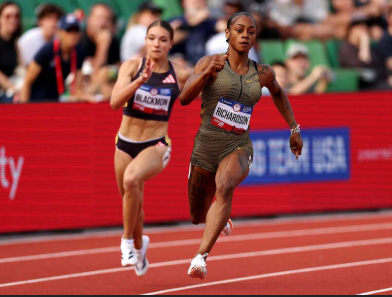

These are most commonly what Track and Field is known for its 100,200,300,400 meter sprints or Short distance races

These still among the Track and Field events, but doesn't get as much love the long distance the most grueling and latic draining events anyone who can complete these with a smile on their faces, or continue to do it has my utmost respect
These events are what make Track and Field unique, as they don't involve running, but rather jumping and throwing. These events require a different skill set and training regimen compared to running events.